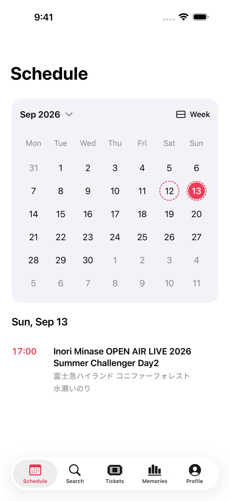
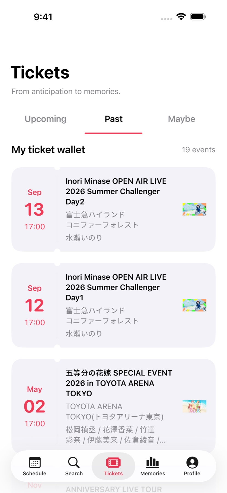
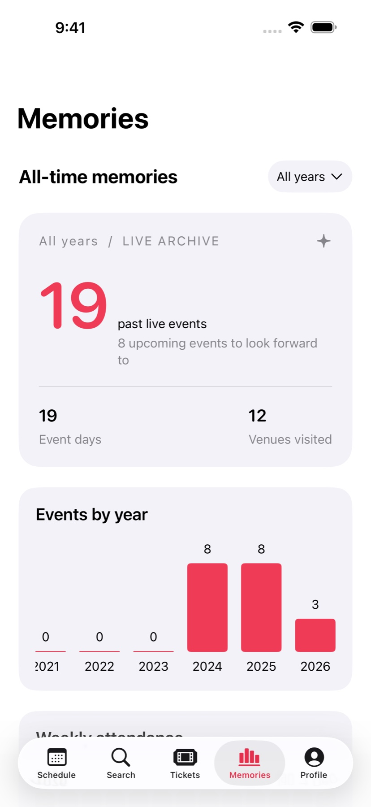

A little more
to look forward to.
Switch between month and week views. Spot your event days, choose a date, and see the day's plans right below the calendar.
Month & week views / Daily agenda
The next show on your mind. The last song still in your head. Keep your live-event plans and memories together, with machi.
Completely free · No purchases or subscriptions / iPhone & iPad / iOS 17 or later

Something to look forward to.
Actual app screens. Attendance is shown with demo records.
Switch between month and week views. Spot your event days, choose a date, and see the day's plans right below the calendar.
Keep upcoming, attended and maybe events in their own places. Add your own events and performers, including the shows you went to long ago.

The performers you saw most. The venues you kept returning to. Revisit your year in live events, then save an attendance receipt to Photos.

Write a note after the show. Pick your own poster. Adjust performer photos and their order, and make your profile feel like you.
Connect your EVENTERNOTE account to easily import your past attendance records and keep attendance and follows in sync. Use iCloud to sync your custom events, photos, profile and other personal data across your own devices.
machi 1.0 is available on TestFlight. Start with your next show—or a night worth remembering.
Join TestFlightInstall Apple's TestFlight app from the App Store.
Use “Join TestFlight” on this page to open the machi invitation.
Install the app in TestFlight and start your event journal.
Contact & feedback
Feedback on GitHub ↗Yes. Connect your EVENTERNOTE account under My Page → Data sync to import past attendance records and follows, then sync subsequent changes. You can configure iCloud sync separately on the same page.
Event search and browsing use event and performer data from EVENTERNOTE. You can also add your own events and performers. Performer photos use AniList, TMDB when configured, and YouTube for selected performers. You can upload your own photos too.
Not for the core features. To use TMDB performer photos, add your own API key under My Page → Settings → Photo services.
Japanese, Simplified Chinese, Traditional Chinese for Taiwan and Hong Kong, and English. Choose a language in the app's settings.
Availability and tester limits can affect new invitations. Update TestFlight and try the link again, or use the GitHub support page.
Send feedback through TestFlight or report an issue on GitHub. Include your device, iOS and app versions, and the steps to reproduce the issue.